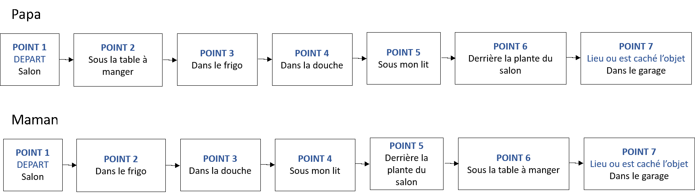

Nous te proposons ici de relever un challenge ! Tu as pour mission de créer une course d’orientation dans ton appartement/ ta maison pour tes parents, frères et sœurs… !
Pour cela, suis les étapes proposées dans les pages suivantes...
Trouve un objet unique dans ton logement que tes parents/frères/sœurs/ … devront retrouver !
Réfléchis à 5 endroits espacés dans ton logement où tu pourras cacher des indices dans la maison, et à un endroit où cacher l’objet. Le lieu de départ de ta course sera votre salon.
Crée-toi des frises (que tu gardes pour toi) sur lesquelles tu marques l’enchaînement des lieux où tes parents devront aller. Le départ doit toujours être le salon et l’arrivée doit toujours être la même pour tout le monde.
Astuce : Tu dois créer une frise par personne qui participera au jeu sinon tout le monde va se suivre. (Tu peux faire le même enchaînement mais décaler d’une étape par personne.)
En voilà un exemple :
A partir de la première frise : Écris une énigme pour aller du point 1 au point 2, du point 2 au point 3, …., du point 6 au point 7 sur différents morceaux de papiers. Pour cela, sers-toi des différentes méthodes de code apprises dans l’atelier précédent. Varie les énigmes (tu peux utiliser différentes manières de coder, une charade, un rébus…). Écris avec chaque énigme quel code tu utilises, tes parents ne les connaissent pas. Plies chaque papier et écris sur le papier plié pour qui il est.
Astuce : Écris sur chaque papier où tu vas devoir le cacher. Par exemple, « salon » pour l’énigme de départ où « sous la table à manger » pour le 2ème papier que doit trouver ton papa. Mais n’écris pas vers quel lieu le papier envoies. Sur chaque papier plier tu pourras alors lire « Papa-lieux où il a le papier ».
Pour chaque autre frise : Réécris les mêmes énigmes que pour la première frise. Mais fait attention à chaque frise pour cacher au bon endroit chaque indice ! (Selon l’exemple, l’indice qui envoie sous la table à manger sera donné au départ au papa alors qu’il sera caché derrière la plante du salon pour maman). Et n’oublies pas de préciser pour qui seront les papiers !
Une fois que tout cela est fait, vérifie que tu as tous les papiers pour faire chaque parcours. Et prends une photo de toutes tes énigmes.(Toutes tes énigmes doivent tenir sur une photo et être lisibles)
Garde toutes les énigmes sur lesquelles tu as écris « salon », que tu donneras en main propre à tes parents et, discrètement, vas cacher les autres énigmes. (A l’endroit qui est marqué sur le papier)
Tu n’auras pas d’énigme à cacher au point 7. C’est normal ! A ce point, cache l’objet que ta famille doit retrouver.
Réunis ta famille, explique leur les règles (leur but est de retrouver l’objet caché, pour cela, ils vont devoir résoudre des énigmes une à une et chercher les énigmes suivantes grâce aux messages qu’ils auront décodés. Le premier à trouver l’objet caché a gagné), distribue-leur le premier indice et lance la course.
Si tes parents ont besoin n’hésites pas à leur donner des indices (comme par exemple quel message codé tu as utilisé et le fonctionnement d’un message codé : Avocat- A=K)
Pour finir, montre-nous que tu as relevé le défi : Prends une photo de tes énigmes et une photo des mains du gagnant avec l’objet retrouvé et partages nous le tout pour qu’on te valide la course !